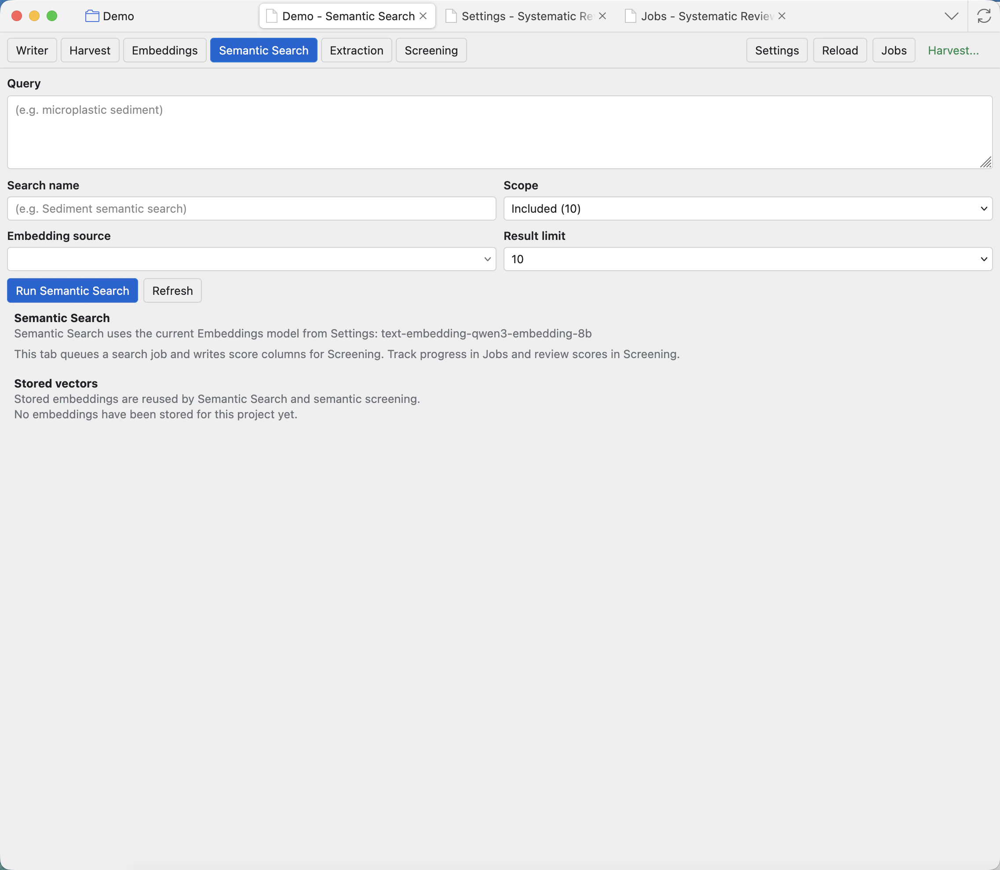

Semantic Search
Semantic Search compares a natural-language query against embedded project records and writes score columns for Screening.

Write a search question
Use a plain-language description of what you want to find. Semantic search is useful when matching meaning matters more than exact wording. The query can be a topic, concept, eligibility idea, intervention, outcome, or phrase.
Semantic Search needs completed embeddings first. If no embedding source is available, configure an Embeddings model in Settings: Runtime and model presets, then run the Embeddings tab.
Controls
Query
The natural-language search target. Write what a relevant record should be about.
Search name
The label used for the generated score column. Choose a short name that still explains the concept.
Scope
The records to score. Use Pending for screening support, Included for synthesis exploration, or another scope when appropriate.
Embedding source
Selects which stored vectors to compare against. The source must match a completed embeddings job.
Result limit
Controls how many top records are written or emphasized. Larger limits can be useful for broad exploration.
Run Semantic Search
Queues the scoring job. When it finishes, inspect the new score columns in Screening.
Review results
Open Screening and sort or filter by the generated score columns. High scores are not automatic inclusion decisions; they are a way to find records that are semantically close to your query.

Score columns
The generated numeric score shows how close a record is to the semantic query. Higher is closer; it is not an inclusion decision by itself.
Sorting
Sort by the score column to bring likely matches to the top of the current scope.
Screening follow-up
After sorting, read the title, abstract, extraction fields, and notes before moving records between scopes.
Semantic scores are decision support. Always combine them with normal screening judgement and documented criteria.